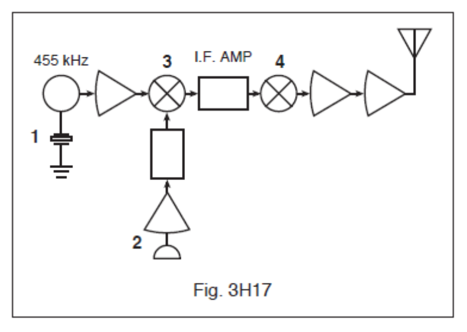

All 18 FCC GROL questions for 3H Modulation with the correct answers marked, from the official current FCC question pool. Test yourself with the free practice exam.
3-57H1
The deviation ratio is the:
A. Audio modulating frequency to the center carrier frequency.
B. Maximum carrier frequency deviation to the highest audio modulating frequency. ✓
C. Carrier center frequency to the audio modulating frequency.
D. Highest audio modulating frequency to the average audio modulating frequency.
3-57H2
What is the deviation ratio for an FM phone signal having a maximum frequency deviation of plus or minus 5 kHz and accepting a maximum modulation rate of 3 kHz?
A. 60
B. 0.16
C. 0.6
D. 1.66 ✓
3-57H3
What is the deviation ratio of an FM-phone signal having a maximum frequency swing of plus or minus 7.5 kHz and accepting a maximum modulation rate of 3.5 kHz?
A. 2.14 ✓
B. 0.214
C. 0.47
D. 47
3-57H4
How can an FM-phone signal be produced in a transmitter?
A. By modulating the supply voltage to a class-B amplifier.
B. By modulating the supply voltage to a class-C amplifier.
C. By using a balanced modulator.
D. By feeding the audio directly to the oscillator. ✓
3-57H5
What is meant by the term modulation index?
A. The ratio between the deviation of a frequency modulated signal and the modulating frequency. ✓
B. The processor index.
C. The FM signal-to-noise ratio.
D. The ratio of the maximum carrier frequency deviation to the highest audio modulating frequency.
3-57H6
In an FM-phone signal, what is the term for the maximum deviation from the carrier frequency divided by the maximum audio modulating frequency?
A. Deviation index.
B. Modulation index.
C. Deviation ratio. ✓
D. Modulation ratio.
3-58H1
In Figure 3H17, the block labeled 4 would indicate that this schematic is most likely a/an:

A. Audio amplifier.
B. Shipboard RADAR.
C. SSB radio transmitter. ✓
D. Wireless LAN (local area network) computer.
3-58H2
In Figure 3H17, which block diagram symbol (labeled 1 through 4) represents where audio intelligence is inserted?
A. 1
B. 2 ✓
C. 3
D. 4
3-58H3
What kind of input signal could be used to test the amplitude linearity of a single-sideband phone transmitter while viewing the output on an oscilloscope?
A. Whistling in the microphone.
B. An audio frequency sine wave.
C. A two-tone audio-frequency sine wave. ✓
D. An audio frequency square wave.
3-58H4
What does a two-tone test illustrate on an oscilloscope?
A. Linearity of a SSB transmitter. ✓
B. Frequency of the carrier phase shift.
C. Percentage of frequency modulation.
D. Sideband suppression.
3-58H5
How can a double-sideband phone signal be produced?
A. By using a reactance modulator.
B. By varying the voltage to the varactor in an oscillator circuit.
C. By using a phase detector, oscillator, and filter in a feedback loop.
D. By modulating the supply voltage to a class C amplifier. ✓
3-58H6
What type of signals are used to conduct an SSB two-tone test?
A. Two audio signals of the same frequency, but shifted 90 degrees in phase.
B. Two non-harmonically related audio signals that are within the modulation band pass of the transmitter. ✓
C. Two different audio frequency square wave signals of equal amplitude.
D. Any two audio frequencies as long as they are harmonically related.
3-59H1
What is an important factor in pulse-code modulation using time-division multiplex?
A. Synchronization of transmit and receive clock pulse rates. ✓
B. Frequency separation.
C. Overmodulation and undermodulation.
D. Slight variations in power supply voltage.
3-59H2
In a pulse-width modulation system, what parameter does the modulating signal vary?
A. Pulse frequency.
B. Pulse duration. ✓
C. Pulse amplitude.
D. Pulse intensity.
3-59H3
What is the name of the type of modulation in which the modulating signal varies the duration of the transmitted pulse?
A. Amplitude modulation.
B. Frequency modulation.
C. Pulse-height modulation.
D. Pulse-width modulation. ✓
3-59H4
Which of the following best describes a pulse modulation system?
A. The peak transmitter power is normally much greater than the average power. ✓
B. Pulse modulation is sometimes used in SSB voice transmitters.
C. The average power is normally only slightly below the peak power.
D. The peak power is normally twice as high as the average power.
3-59H5
In a pulse-position modulation system, what parameter does the modulating signal vary?
A. The number of pulses per second.
B. The time at which each pulse occurs. ✓
C. Both the frequency and amplitude of the pulses.
D. The duration of the pulses.
3-59H6
What is one way that voice is transmitted in a pulse-width modulation system?
A. A standard pulse is varied in amplitude by an amount depending on the voice waveform at that instant.
B. The position of a standard pulse is varied by an amount depending on the voice waveform at that instant.
C. A standard pulse is varied in duration by an amount depending on the voice waveform at that instant. ✓
D. The number of standard pulses per second varies depending on the voice waveform at that instant.